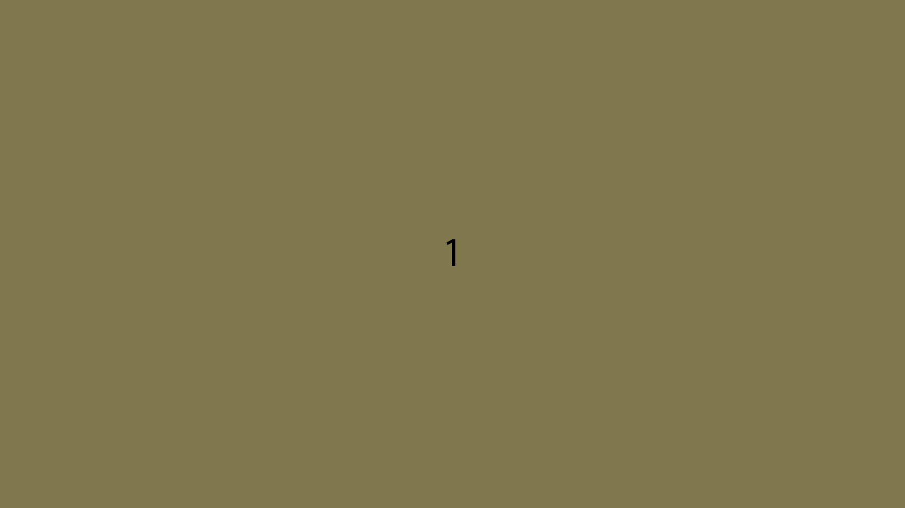

Foster Design System
Images
Aspect Ratios
- 16:9 Banner / "Hero" Images, Section Backgrounds
- 4:3 Horizontal Card Image
- 3:4 Vertical Images
- 1:1 Favicons, Social Media Icons, Avatars / Profile Images
Image Styling
Most images should have no border, with a border-radius of 0.
Images used in cards should have border-radius: 5% 5% 0 0; (5% on the top, 0 on the bottom)
Profile / Avatar images are preferred to have a 50% border radius with a 1px black border when not used as a background
Regular Image
Avatar / Profile Image